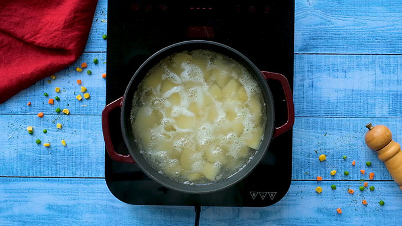

Irish Shepherd's Pie
DESCRIPTION
Traditional Irish Shepherd’s Pie would actually call for ground lamb. The difference between Shepherd’s Pie and Cottage Pie is the meat. Cottage Pie uses ground beef, while Shepherd’s Pie uses ground lamb. I called this recipe Shepherd’s Pie. But, I wrote the recipe so that you could use ground beef or ground lamb. I typically use ground beef because it is widely available. But, for a special occasion, like St. Patricks day, I would use ground lamb.
Ingredients
Meat filling
- 2 tablespoons olive oil
- 1 cup chopped yellow onion
- 1 lb. 90% lean ground beef -or ground lamb
- 2 teaspoons dried parsley leaves
- 1 teaspoon dried rosemary leaves
- 1 teaspoon dried thyme leaves
- 1/2 teaspoon salt
- 1/2 teaspoon ground black pepper
- 1 tablespoon Worcestershire sauce
- 2 garlic cloves -minced
- 2 tablespoons all purpose flour
- 2 tablespoons tomato paste
- 1 cup beef broth
- 1 cup frozen mixed peas & carrots*
- 1/2 cup frozen corn kernels
How to Make Shepherd’s Pie
- Sauté some chopped onions in olive oil
- Add ground beef or ground lamb
- Add dried parsley, dried thyme, dried rosemary, salt, and pepper
- Stir and cook the meat mixture until the meat is browned
- Add minced garlic and Worcestershire sauce
- Cook the garlic for a minute]
- Add flour and tomato paste
- Add beef broth, frozen mixed peas and carrots, and frozen corn kernels.
- Simmer the meat gravy until it is thick.

- Boil some peeled and chopped potatoes until they are soft
- Drain the potatoes
- Add butter, half & half, parmesan cheese, garlic powder, salt, and pepper
- Mash the potatoes until smooth
- Pour the meat mixture into a casserole dish
- Top it with the cheesy mashed potatoes
- Bake until the meat is bubbling and the potatoes are golden